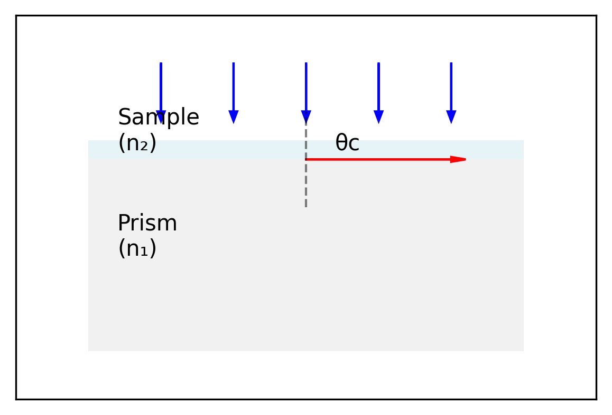

Code
import numpy as np
import matplotlib.pyplot as plt
from matplotlib.patches import Polygon
import matplotlib.patches as patches
# Create figure
fig, ax = plt.subplots(figsize=get_size(12,8))
# Draw prism outline
prism_points = np.array([[0,0], [3,0], [3,2], [0,2]])
prism = Polygon(prism_points, facecolor='lightgray', alpha=0.3)
ax.add_patch(prism)
# Draw sample layer
sample_points = np.array([[0,2], [3,2], [3,2.2], [0,2.2]])
sample = Polygon(sample_points, facecolor='lightblue', alpha=0.3)
ax.add_patch(sample)
# Draw incident rays
x = np.linspace(0.5, 2.5, 5)
for xi in x:
ax.arrow(xi, 3, 0, -0.5, head_width=0.05, head_length=0.1, fc='b', ec='b')
# Draw critical ray
ax.arrow(1.5, 2, 1, 0, head_width=0.05, head_length=0.1, fc='r', ec='r')
# Draw normal line (dashed)
ax.plot([1.5, 1.5], [1.5, 2.5], 'k--', alpha=0.5)
# Add angle labels
ax.text(1.7, 2.1, 'θc', fontsize=10)
# Add labels
ax.text(0.2, 1, 'Prism\n(n₁)', fontsize=10)
ax.text(0.2, 2.1, 'Sample\n(n₂)', fontsize=10)
# Set axis limits and remove ticks
ax.set_xlim(-0.5, 3.5)
ax.set_ylim(-0.5, 3.5)
ax.set_xticks([])
ax.set_yticks([])
plt.show()